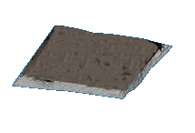

Hi, I'm Elvis. I take interest in computers, literature, true crime and music. Sufjan Stevens, and Mitski Miyawaki are artists I admire. I also love reading books by Osamu Dazai. Future plans include going into computer science at University of British Columbia and wokring as a software engineer.
My interests at the moment may include; playing idv [identity v], listening to music, and watching calming vlogs.
I currently live in Kelowna, British Columbia, originally from late Bombay (Mumbai). Some places i would like to visit in the near future include Vietnam and Bangkok.
home 